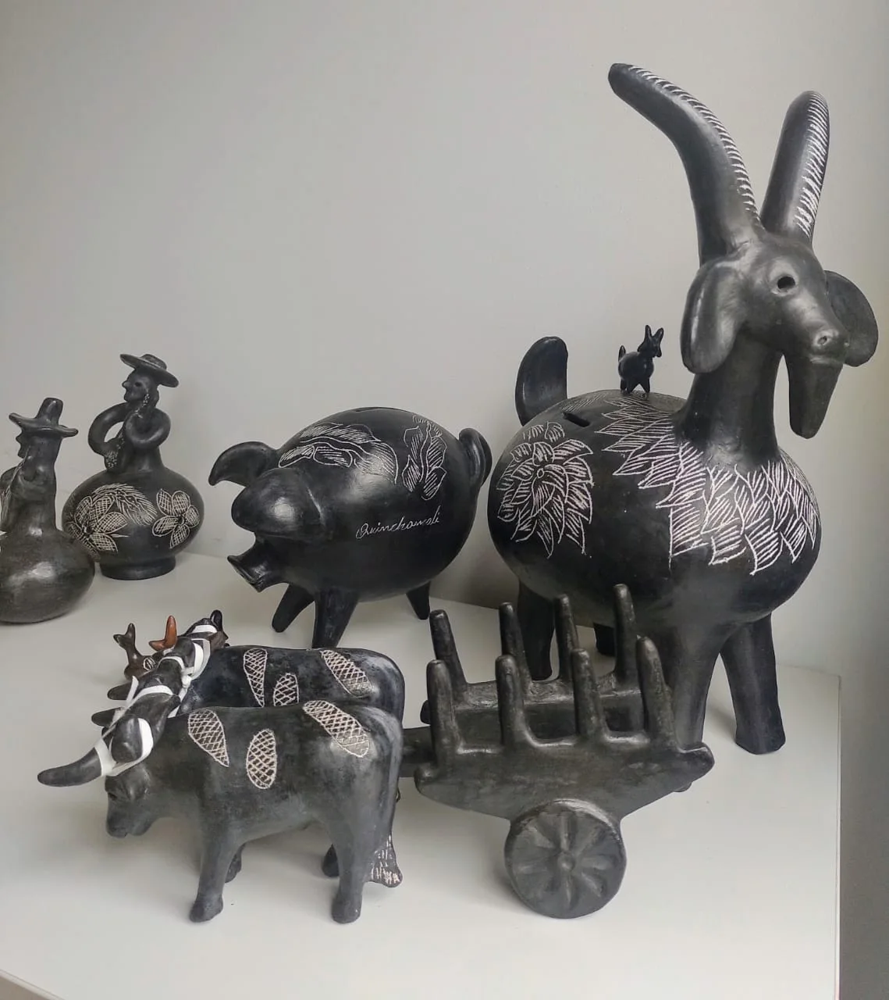

Entre las herramientas descritas para la alfarería de Quinchamalí aparecen agujas de vitrola. El inventario del Centro de Documentación de Bienes Patrimoniales chileno las identifica para dibujar. Un elemento asociado a reproducir sonido entra así en otro trabajo: abrir una línea sobre greda. El detalle permite mirar estas piezas desde una decisión técnica, antes de convertir su color negro en una identidad que parece explicarlo todo. [1]
La ficha distingue modelado, bruñido, incisión y ahumado. Describe que las líneas se realizan antes de la cocción y reciben tierra blanca; el negro se obtiene mediante una operación de ahumado. Son intervenciones diferentes con efectos que después vemos reunidos. La superficie terminada comprime un proceso que no puede reconstruirse suponiendo que se aplicó pintura blanca sobre un objeto ya negro. [1]
En la guitarrera fotografiada, el volumen del cuerpo sostiene una figura y una extensa zona de dibujo. El instrumento, el sombrero y la posición de los brazos ayudan a reconocerla sin que cada detalle tenga que resolverse del mismo modo. La forma tridimensional y el trazo superficial colaboran: uno establece presencia y el otro introduce diferencias dentro de ella.


La Biblioteca Nacional de Chile identifica las figuras negras con decoración blanca incisa como un rasgo de esta producción. La descripción resulta útil si no la convertimos en obligación para todas las piezas. Una tradición puede tener elementos reconocibles y conservar decisiones individuales. Para analizar una obra hace falta seguir sus proporciones y sus encuentros, además de identificar el centro donde se realizó. [2]
La línea sobre una forma redonda presenta un problema distinto del dibujo en una hoja. Al girar el objeto cambia lo que permanece visible. Un motivo puede acompañar la curvatura o establecer una franja que la interrumpe; el espacio sin incidir permite que las figuras respiren. La composición se comprende a través de varios puntos de vista, aunque la publicación deba escoger uno para comenzar.
El bruñido aporta otra lectura. La luz que una superficie devuelve participa en la percepción del volumen y puede competir con el dibujo o hacerlo más evidente. Mirar solo la silueta de la guitarrera deja fuera ese comportamiento visual. En el oficio, la forma y su terminación no llegan como decisiones independientes que se encuentran por casualidad al final.
La imagen del conjunto de piezas muestra diferencias de escala y de figura dentro de una familia material. Una colección de pequeñas formas no tiene que leerse como repetición de un único modelo. Puede ser una investigación continua sobre cuerpos, recipientes y apoyos. La clasificación museística ayuda a reunirla; el examen de cada pieza permite reconocer lo que la clasificación comprime.


En 2022, la alfarería de Quinchamalí y Santa Cruz de Cuca ingresó en la Lista de Patrimonio Cultural Inmaterial que requiere medidas urgentes de salvaguardia. La UNESCO señaló riesgos vinculados a materias primas, rentabilidad y transmisión, entre otros. La declaración reconoce una dependencia que una vitrina puede ocultar: conservar objetos no asegura por sí solo la continuidad del trabajo que los produce. [3]
Ese dato modifica la pregunta sobre innovación. Cambiar un motivo o introducir otro producto es una posibilidad, pero no responde automáticamente al acceso a materiales ni al reconocimiento del trabajo. Una evaluación útil tendría que escuchar a las alfareras y distinguir los problemas. La novedad formal puede ser visible en una fotografía; las condiciones de continuidad necesitan otra documentación.
La aguja de vitrola conserva el interés inicial porque desplaza una herramienta hacia una función específica sin convertir el gesto en una explicación total. El conocimiento está en saber qué trazo permite, en qué momento usarla y cómo se relaciona con las demás operaciones. La cerámica de Quinchamalí merece esa lectura cercana: el negro llama a mirar, pero las decisiones que lo acompañan hacen que valga la pena quedarse.
Fuentes.
- Salazar Maestri y Cordero Valdés — Centros de Producción Artesanal, DIBAM/CDBP, 2016, página 32
- Biblioteca Nacional de Chile — Quinchamalí
- UNESCO — inscripción de la alfarería de Quinchamalí y Santa Cruz de Cuca en la Lista de Salvaguardia Urgente, 30.11.2022
Ensayo documental. Las herramientas y operaciones proceden de una ficha técnica de 2016; no se afirma que cada alfarera trabaje hoy de idéntica manera. No se realizaron pruebas de cocción ni entrevistas.
Fuentes consultadas el 15.11.2026. Análisis e interpretación: RUMMOR. Edición privada para revisión.